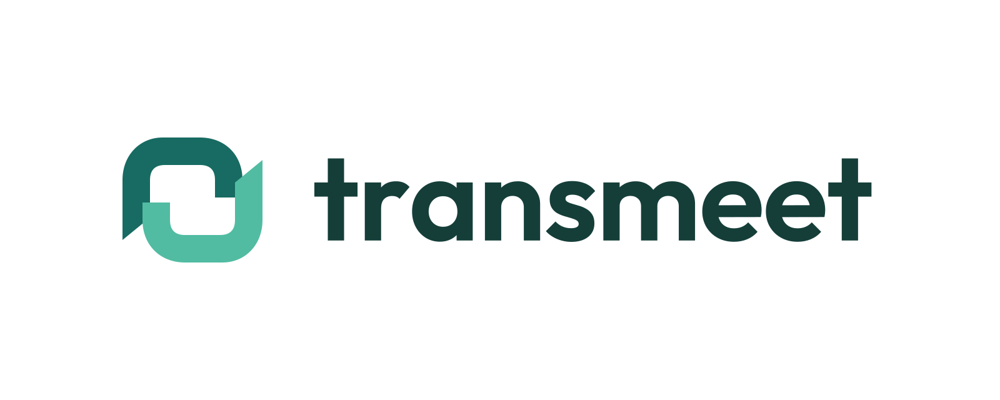
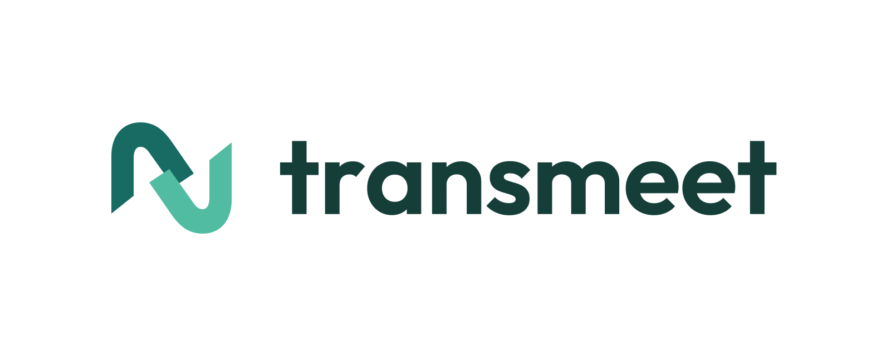
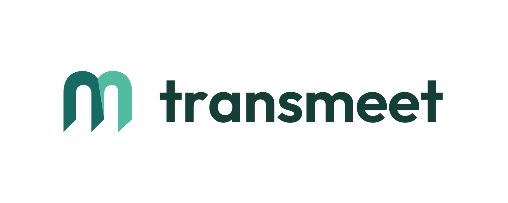
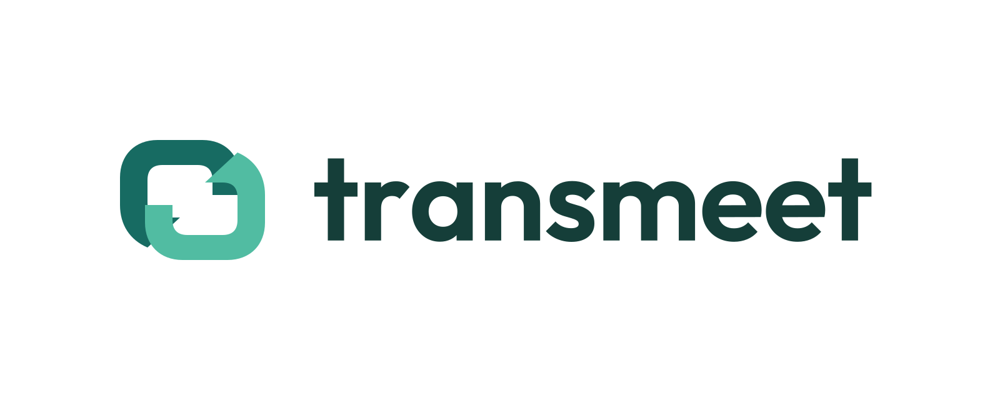

대화의 연결
서로 다른 두 대화가 하나의 고리로 연결됩니다.

이미지를 누르면 크게 볼 수 있습니다. 모든 후보는 PNG와 편집 가능한 SVG로 제공됩니다.
서로 다른 두 대화가 하나의 고리로 연결됩니다.

양방향으로 오가는 통역의 흐름을 표현합니다.

두 말풍선의 곡선을 연결해 meet의 m을 만듭니다.

서로 맞물린 말풍선이 언어 사이의 연결을 표현합니다.
